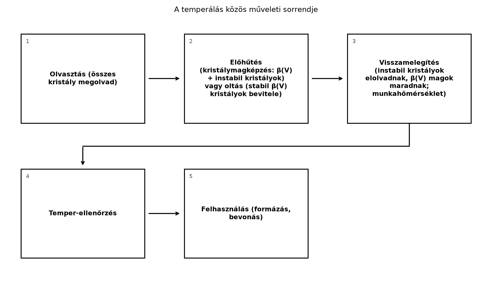
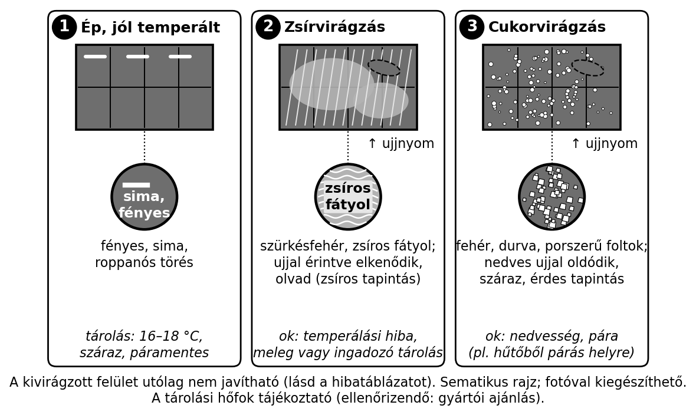

Egy bonbonkészítő cukrászműhelyben a reggeli termelés előtt a csokoládé olvasztásra kerül. A frissen öntött bonbonhéj azonban nem fényes, hanem csíkos, foltos; a hűtőből kivéve puhán, vagy éppen darabolva törik. A hiba általában nem a csokoládé minősége, hanem a temperálás elmaradása vagy hibás kivitelezése. A temperálás az a művelet, amely biztosítja a csokoládé kakaóvajának megfelelő kristályszerkezetét – ettől lesz a csokoládé fényes, ropogós, zsugorodó (a formából könnyen kijövő), és tárolás közben sem virágzik ki. Ebben az alfejezetben a különböző temperálási módszereket, az ellenőrzést és a leggyakoribb hibákat tanuljuk meg, hogy az eredményt megismételhetően, higiénikusan és gazdaságosan érjük el.
A csokoládé temperálása minden módszernél ugyanazt a három szakaszt követi: olvasztás – az összes korábbi kristály megszüntetése; előhűtés vagy oltás – hűtéskor stabil β(V) kristálymagok és instabil kristályok képződnek, oltáskor kész stabil β(V) kristályokat viszünk be; visszamelegítés – a felesleges instabil kristályok elolvadása, a munkahőmérséklet beállítása. Ezt a sorrendet mutatja az alábbi folyamatábra.

Definíció. A temperálás a csokoládéban lévő kakaóvaj kristályos részének szabályozott hűtése–melegítése, amelynek célja a megfelelő hőállóságú, finom szemcséjű stabil β(V) kristálymódosulat kialakítása. A jól temperált csokoládé fényes, a formából zsugorodva kijön, törése kemény, roppanó, és szobahőmérsékleten néhány hónapig stabil (ellenőrizendő: gyártói ajánlás).
Szabály. A temperálás csak akkor sikerül, ha a munkakörnyezet hőmérséklete 18–22 °C, a relatív páratartalom 40–60 % közötti (ellenőrizendő: gyártói útmutató). Magas hőmérséklet lassítja a kristályosodást, magas páratartalom cukorvirágzást okozhat. A feldolgozandó csokoládé hőmérsékletét a fajtától függően kell tartani: étcsokoládé munka-hőmérséklete általában 31–32 °C, tejcsokoládé 29–30 °C, fehér csokoládé 28–29 °C (a pontos érték gyártói adatlap szerint; ellenőrizendő).
Tilos. A már temperált csokoládéba vizet, tejszínt, cukorszirupot vagy párától nedves eszközt juttatni, mert a csokoládé „behúzódik”: sűrűvé, görcsössé, szemcséssé válik, és nem használható bevonásra. Az ilyen masszát legfeljebb más célra (pl. süteménybetét) használjuk, de közvetlenül nem tölthető formába.
Ez a legegyszerűbb kézi módszer kisebb mennyiséghez, például otthoni gyakorlathoz vagy csokoládédísz készítéséhez. A csokoládét kisebb darabokra vágjuk, majd egy fém vagy üveg tálban, alatta 45–55 °C-os vízfürdő fölött megolvasztjuk (ellenőrizendő: az olvasztási hőmérséklet). Fontos, hogy a tál alja ne érjen a vízbe, és a gőz ne csaphasson a csokoládéba. Olvasztás közben keverjük. Az olvasztott masszát a fajtának megfelelő előhűtési hőmérsékletre hűtjük (ét: kb. 27–28 °C; tej: kb. 26–27 °C; fehér: kb. 26–27 °C; ellenőrizendő: gyártói adatlap, a temperálási görbe táblázata szerint). A hűtés történhet a tál hideg víz fölé helyezésével, gyakori keverés közben. Amikor a massza sűrűsödni kezd, ezt a folyamatot ne hagyjuk abba. Ezután ismét melegítjük a tálat a meleg vízfürdő fölé, és visszamelegítjük a munka-hőmérsékletre (ét: 31–32 °C; tej: 29–30 °C; fehér: 28–29 °C). A hőmérsékletet folyamatosan ellenőrizzük digitális vagy infravörös hőmérővel.
Miért? Az olvasztás után a hűtés során kis, instabil kristályok képződnek; a visszamelegítés éppen az instabil módosulatokat olvasztja el, a stabil β(V) kristályok megmaradnak. A vízfürdő kíméletes hőátadást ad, de a hőmérséklet szabályozása nehézkes.
Kis mennyiségű csokoládénál, tanulási célra megfelelő, de üzemi termeléshez nem jellemző. A csokoládét mikrohullámú sütőbe helyezzük, alacsony teljesítményen (300–500 W), 15–20 másodperces szakaszokban melegítjük, közben kivesszük és keverjük. Amikor a csokoládé kétharmada megolvadt, a maradék a keveréstől tovább olvad, így elkerülhető a túlhevítés. Az előhűtés és visszamelegítés a vízfürdős módszerrel azonos, de a mikrohullámú sütőben csak kis adagokat temperáljunk.
A klasszikus kézműves technika nagyobb mennyiséghez, márvány- vagy rozsdamentes felületen. A megolvasztott, 45–50 °C-ra melegített étcsokoládé (tej- és fehér csokoládénál alacsonyabb, kb. 40–45 °C; ellenőrizendő) kétharmadát a hűvös márványlapra öntjük. Háromszöglettel (triangli) vagy palettakéssel folyamatosan visszahúzogatjuk a masszát a lapon: összehúzva szétterítjük, majd ismét összehúzjuk. Ez a tablírozás. A művelet során a csokoládé hűl, besűrűsödik, mert a kakaóvajból instabil kristályok képződnek. Az előhűtési hőmérséklet elérésekor (ét: 27–28 °C) a lapról visszahúzzuk a masszát a melegen tartott maradék felhevített csokoládéhoz, és jól elkeverjük. A meleg csokoládé hőmérséklete a kívánt munka-hőmérsékletre áll be (ét: 31–32 °C). Ha túl hideg, rövid vízfürdővel óvatosan visszamelegítjük.
A táblás temperálás hat fogását a képsor mutatja; a hőmérő-ikonok a temperálási görbe étcsokoládés értékeit adják (a HTML-kiadásban a csokoládéfajta átváltható).
Higiénia. A márványlapot és a pengét tisztán, szárazon, zsírmentesen használjuk; a korábbi temperálás maradékát óvatosan távolítsuk el. A lap hőmérséklete 18–20 °C legyen (ellenőrizendő: üzemi gyakorlat). A folyamat közben ne kerüljön víz a csokoládéra.
A táblás módszernél egyszerűbb és megbízható módszer ipari és kézműves környezetben egyaránt. A megolvasztott csokoládéba (ét: kb. 45–50 °C) oltócsokoládét – azaz már temperált, stabil β(V) kristályokat tartalmazó csokoládét – adagolunk. Az oltócsokoládé lehet apróra vágott, ugyanabból a fajtából, vagy kakaóvajpor. Az oltócsokoládé mennyisége általában a teljes (olvasztott és oltó) tömeg 10–20 %-a (ellenőrizendő: gyártói ajánlás). Az apróra vágott oltócsokoládét a 45–50 °C-os masszába adagoljuk, és keverjük, amíg a massza el nem éri a munkahőfokot; a nagy mennyiségű oltó hűti a masszát, egy része szilárd marad, és beviszi a stabil kristályokat. Kakaóvajporból kevesebb, kb. 1–2 % elég, de a port nem szabad a 45–50 °C-os masszába szórni, mert ott azonnal megolvad, és a β(V) kristályai elvesznek: a masszát előbb a munkahőfok közelébe (étcsokoládénál kb. 34–35 °C-ra) hűtjük, és csak ekkor keverjük bele a kakaóvajport (ellenőrizendő: gyártói adatlap). Keverés közben figyeljük a hőfokot, és amikor a kívánt munka-hőmérsékletet elérjük, az oltás kész. A módszer különösen alkalmas kisebb mennyiségekhez, bonbonformákhoz és csokoládébevonathoz.
Üzemi körülmények között a legszabályozottabb megoldás a folyamatos vagy szakaszos temperálógép. A gép az olvasztó-, hűtő- és melegítőzónákat automatikusan vezérli, így a csokoládé folyamatosan a munka-hőmérsékletű, temperált állapotban tartható. A kezelő feladata a gép feltöltése, a megfelelő program kiválasztása, valamint a kifolyó csokoládé időnkénti ellenőrzése. A gép tisztítása csak áramtalanítás és leállás után végezhető.
Biztonsági korlát. A gépi temperálás tanműhelyi vagy üzemi környezetben, oktatás után és felügyelet mellett végezhető; otthon háztartási eszközökkel, kis adagban gyakorolj. A gép mozgó alkatrészei, fűtőzónái égési és vágási sérülést okozhatnak; működés közben ne nyúljunk a résbe, a védőburkolatot soha ne iktassuk ki.
A temperálás sikerességét minden felhasználás előtt ellenőrizni kell, mert a hőmérséklet önmagában nem garantálja a kristályszerkezetet.
Eljárás. A kenőkéspróba során a temperált csokoládéból vékony réteget kenünk egy tiszta, hűvös pengére, műanyag lapra vagy sütőpapír csíkra. A mintát az asztalon hagyjuk (18–20 °C-os környezetben). A jól temperált csokoládé kb. 3–5 percen belül (tájékoztató érték, ellenőrizendő: gyártói útmutató; a temperálási görbe alfejezetben ugyanez az érték szerepel) egyenletesen besűrűsödik, fényes, zsugorodó felületet ad, a papírról könnyen lepattintható. Ha a minta sokáig folyós marad, vagy puha, kenődik, a temperálás nem megfelelő: túl meleg a massza, vagy nincs elég stabil kristály. Ekkor a stabil kristálymagok részben elolvadtak, ezért a puszta kisebb hűtés nem elég: a masszát oltócsokoládéval (vagy kakaóvajporral) oltjuk, vagy újra végigvisszük a görbén (hűtés az előhűtési hőfokra keverés közben, majd visszamelegítés a munkahőfokra), és a kenőkéspróbát megismételjük. Ha a minta azonnal megdermed és a felülete matt, szemcsés, a hőmérséklet túl alacsony, és instabil kristályok dominálnak; ilyenkor óvatosan visszamelegítjük a munka-hőmérsékletre.
Cél. Temperáljunk 1 000 g étcsokoládét táblás módszerrel, és ellenőrizzük kenőkéspróbával.
Figyelem. A vízfürdő gőze forrázást okozhat; a tál alját ne engedjük a forró vízbe, az edényt hőálló kesztyűvel vagy száraz konyharuhával fogjuk meg, és ne hajoljunk a gőz fölé. A gőz és a víz a csokoládét is tönkreteszi.
1. Termék neve, csoport, alapmennyiség: étcsokoládé temperálása; 1000 g étcsokoládé (pl. 70 %-os kakaótartalmú); cél: bonbonhüvely öntése bonbonformába.
2. Anyaghányad táblázat
| Nyersanyag | Mennyiség (g) | Megjegyzés |
|---|---|---|
| Étcsokoládé (apróra vágva) | 1000 | 70 % kakaótartalom; olvasztandó |
| Összes tömeg | 1000 | bruttó = nettó, ha nincs egyéb adagolt anyag |
3. Eszközök és gépek: hőmérő, vízfürdős tál, márványlap vagy legalább 2 cm vastag rozsdamentes lap, triangli vagy palettakés, spatula, hűtőrács, bonbonforma, fűtött légterű asztal (opcionális).
4. Higiéniai munkakezdés: tiszta munkaruha, hajháló, ékszer le, kézmosás; a munkafelület és az eszközök zsír- és vízmentesek; nyersanyag ellenőrzése (sértetlen csomagolás, felhasználhatóság).
5. Műveleti sorrend:
6. Kritikus pontok (élelmiszerbiztonság) és technológiai kulcspontok:
7. Allergének a 14 jelölendő csoport szerint: a 70 %-os étcsokoládé jellemzően tartalmaz szóját (lecitin) és nyomokban tejet, dióféléket (keresztszennyeződés). A felhasznált csokoládé gyártói jelölése szerint kell feltüntetni; az allergénmátrixot naprakészen kell tartani.
8. Minőségi jellemzők: a temperált csokoládé fényes, a formából zsugorodással kijön, törése roppanó, a bonbonhéj vékony, egyenletes.
9. Tárolás, eltarthatóság: a kész csokoládéhéjat száraz, hűvös (16–18 °C), páramentes helyen, fedve tároljuk; eltarthatóság gyártói ajánlás és felhasznált anyag szerint (ellenőrizendő).
10. Tipikus hibák: túlhevített csokoládé, víz becsöpögése, a temper-ellenőrzés elhagyása, nem megfelelő munka-hőmérséklet.
A temperált csokoládé minőségét érzékszervi és fizikai próbával ellenőrizzük. A kenőkéspróba a legfontosabb: kb. 3–5 percen belül mattodás nélküli, egyenletes fényű, zsugorodó réteget kell kapnunk. A bonbonforma kitöltése után a csokoládé a forma üregéből enyhe ütögetésre kiugrik; ez a zsugorodás bizonyítéka. A törésnek keménynek, roppanósnak, nem kenődőnek kell lennie. A felület nem lehet csíkos, foltos, homályos. Az étcsokoládé illata kakaós, nem égett; íze selymes, nem szemcsés. A kész temperált massza hőmérséklete a fajtára megadott munka-hőmérséklet.
| Hiba (tünet) | Ok | Megelőzés / javítás |
|---|---|---|
| Fénytelenség: a kész csokoládé felülete matt, nem fényes. | Nem megfelelő temperálás: kevés a stabil β(V) kristály, vagy a hőmérséklet nem a munka-hőmérséklet. | Ellenőrizzük a kenőkéspróbát; ha kell, adjunk hozzá oltócsokoládét, vagy ismételjük meg a temperálást. |
| Zsírvirágzás: szürkésfehér, zsíros bevonat, amely meleg helyen tárolva jelenik meg. | A kakaóvaj nem stabil kristályformában maradt, és utólag átkristályosodik a felületre. Túl meleg tárolás vagy temperálási hiba. | A készterméket hűvös, stabil hőmérsékleten tároljuk; a temperálást megfelelően végezzük; a már kivirágzott termék nem javítható – eladásra alkalmatlan. |
| Cukorvirágzás: a felület fehéres, durva, porcukros tapintású. | A csokoládé felülete nedvességnek volt kitéve, a cukor kioldódott, majd a víz elpárolgása után újra kikristályosodott. | A munkakörnyezet páratartalmát 60 % alatt tartjuk; hűtőből kivett csokoládét ne tegyünk párás helyre; a cukorvirágzás nem javítható, a termék ehető, de nem értékesíthető prémium minőségben. |
| Csíkosság: a felületben világosabb-sötétebb sávok váltakoznak. | A temperálatlan vagy részlegesen temperált csokoládéban a kristálymódosulatok egyenetlenül oszlanak el; a formába öntés előtt nem keverték el a masszát. | Alapos keverés a feldolgozás előtt; megfelelő temper-ellenőrzés. |
| Sűrűsödés (behúzódás): a csokoládé hirtelen besűrűsödik, görcsössé, szemcséssé válik, nem folyik. | Víz (vagy víztartalmú anyag) került a csokoládéba. | Tilos. Csak száraz eszközöket használunk; a párától védjük a masszát. A behúzódott massza már nem olvasztható vissza bevonásra, legfeljebb süteménybetétnek hasznosítható (ha az élelmiszerbiztonságot nem veszélyezteti). |
A zsír- és a cukorvirágzás ránézésre hasonló; a gyors megkülönböztetést (érintés, nedves ujj) az ábra mutatja.

Egy esküvői torta bonbondíszét készíti a cukrász. Az étcsokoládét gép nélkül, táblás módszerrel temperálja, de a műhely hőmérséklete 26 °C, mert elromlott a klíma. A temperálás ellenére a kenőkéspróba sokáig folyós marad. A cukrász észreveszi, hogy a massza nem hűlt le eléggé, ezért a márványlap fölé tesz egy fémtálcát jeges vízzel, és óvatosan tovább hűti, közben intenzíven kever. Amikor a hőmérséklet 27,5 °C-ra csökken, visszamelegíti 31,5 °C-ra, újra ellenőrzi – a próba 3 perc alatt fényes, roppanós réteget ad. A bonbonhéj elkészül, a későbbi díszítés szép, fényes. Tanulság: a hőmérsékletet mindig ellenőrizni kell, és a munkakörnyezet hőmérséklete döntően befolyásolja a temperálás sikerét.
1. feladat (A) Határozd meg, mi a temperálás célja, és nevezd meg a három szakaszt.
2. feladat (A) Sorold fel, milyen módszereket ismerünk a csokoládé temperálására.
3. feladat (B) 800 g étcsokoládét szeretnénk oltásos módszerrel temperálni. A gyártói adatlap szerint a teljes (olvasztott étcsokoládé + oltócsokoládé) tömeg 15 %-a legyen oltócsokoládé. Mennyi oltócsokoládét kell adagolnunk? Mennyi lesz a feldolgozandó csokoládé össztömege?
4. feladat (B) Egy bonbonforma temperált fehér csokoládéval való kiöntésekor a kenőkéspróba 8 perc után sem szilárdul. A hőmérő szerint a massza 30 °C. Mi a valószínű hiba? Mit tegyünk? (Használd a megadott munka-hőmérsékleteket.)
5. feladat (C) Egy kolléga a temperált csokoládét a hűtőpult fölött, nyitott ablak mellett tárolja, mert „a hűvös jó neki”. A holnapi ellenőrzésre készült bonbonok felületén másnap fehéres, durva foltok jelennek meg. Mi történt? Magyarázd el, mit kell tenni a termékkel, és hogyan lehet megelőzni a hibát.
6. feladat (D) Készíts el otthon vagy tanműhelyben 200 g étcsokoládéval temperálást oltásos módszerrel. Tölts ki egy technológiai lapot a fenti séma szerint, és értékeld az eredményt a kenőkéspróbával. Rögzítsd a hőmérsékleteket és a próba időtartamát!
Önellenőrzés – válaszok
1. feladat (A) A temperálás célja a kakaóvaj stabil β(V) kristályformájának kialakítása, amely fényes, ropogós, zsugorodó csokoládét eredményez. A három szakasz: olvasztás, előhűtés, visszamelegítés.
2. feladat (A) Vízfürdős, mikrohullámú, táblás (tablírozás márványon), oltásos (seeding), gépi (temperálógép).
3. feladat (B)
Az olvasztott 800 g a teljes tömeg 85 %-a:
Ellenőrzés: . Tehát kb. 141 g oltócsokoládét adagolunk, a feldolgozandó massza kb. 941 g.
4. feladat (B) Fehér csokoládé munka-hőmérséklete általában 28–29 °C, tehát a 30 °C túl magas: a stabil β(V) magok részben elolvadtak, ezért kevés a stabil kristály. A puszta lehűtés nem pótolja a magokat. A masszát oltócsokoládéval (vagy kakaóvajporral) oltjuk, vagy újra végigvisszük a görbén: hűtés 26–27 °C-ra keverés közben, majd visszamelegítés 28–29 °C-ra; utána a kenőkéspróbát megismételjük.
5. feladat (C) A jelenség a cukorvirágzás: a nyitott ablakon beáramló párás levegőből nedvesség csapódott le a csokoládé felületére, a cukor kioldódott, majd a víz elpárolgása után kikristályosodott. A termék ehető, de nem prémium minőségű, ezért nem értékesíthető díszdobozos bonbonként. Megelőzés: a temperált és késztermékeket zárt, páramentes helyen tároljuk; a műhely levegőjének páratartalmát szabályozzuk.
6. feladat (D) A gyakorlati feladat megoldása a saját technológiai lap kitöltése, a hőmérsékletek rögzítése. Értékelési szempontok: a csokoládé fényes, a kenőkéspróba kb. 3–5 percen belül megszilárdul, az oltó nem olvadt el teljesen a 45–50 °C-os masszában (a kakaóvajport csak a munkahőfok közelében adtuk hozzá), a bonbonhéj a formából kijön. A feladat akkor sikeres, ha a technológiai lap minden kötelező eleme kitöltésre került.
A temperálás a csokoládé kakaóvajának szabályozott kristályosítása, amely fényes, ropogós, a formából zsugorodó, tárolásálló terméket ad. A módszerek – vízfürdős, mikrohullámú, táblás (tablírozás), oltásos, gépi – mind ugyanazt a három szakaszt követik: olvasztás (az összes kristály elolvadásához), előhűtés vagy oltás (kristálymagképzés: β(V) és instabil kristályok, illetve stabil β(V) kristályok bevitele oltócsokoládéval), visszamelegítés (az instabil kristályok elolvadnak, a β(V) magok maradnak; a munka-hőmérséklet beállítása, 31–32 °C ét-, 29–30 °C tej-, 28–29 °C fehér csokoládénál; ellenőrizendő: gyártói adatlap). A temper-ellenőrzés kenőkéspróbával történik: a jól temperált csokoládé kb. 3–5 perc alatt fényes, zsugorodó réteget ad. Fő hibák: fénytelenség, csíkosság, zsír- és cukorvirágzás, sűrűsödés víztől. A munkakörnyezet legyen 18–22 °C, páratartalma 40–60 %; a csokoládét óvjuk a nedvességtől. Továbbvitt eredmény. A temperálási módszereket használjuk a Bevonómassza, zselék, áthúzó ganache és tükörbevonó, az Édes teasütemények, a Tartós cukrászati készítmények: trüffelkrém, mártás, csomagolás, a Bonbonok jellemzői, alapanyagai és gyártási módszerei és a Különleges díszítés: csokoládé-, marcipán-, karamell-, zselatinmassza- és grillázsdíszek alfejezetekben.